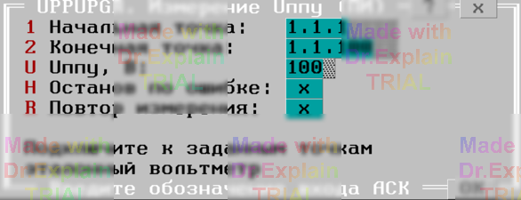

4.9 UPPUPGR. Измерение Uппу (ПИ)
Утилита определяет погрешность задания переменного напряжения с помощью ППУ. Предоставляется меню:

Опции «Начальная точка» и «Конечная точка» задают входы АСК, к которым подключается ППУ и эталонный вольтметр. Точки могут принадлежать любому БК конфигурации.
Опция «Uппу» задает напряжение, которое должно быть выставлено на точки с помощью ППУ.
К заданным точкам подключите эталонный вольтметр.
После ввода параметров меню автоматически выполняются следующие действия:
- Начальная заданная точка подключается к шине A1.
- Конечная заданная точка подключается к шине B1.
- Производится подключение ППУ к шинам A1, B1 и установка заданного значения Uппу (при этом ППУ проверяется автокоррекция по показаниям вольтметра).
- После предупреждения о высоком напряжении появляется второе меню:
Введите напряжение на заданных точках, измеренное эталонным вольтметром. Это значение будет использоваться при расчёте погрешности. Нажмите Enter.
Производится измерение Uппу. В протокол выводятся сообщения вида:
$TST1 Uд.б=100В+-5.00% Uизм=100.0В Погр=+0.00%
$TST1 Измерений:1 Все норма ПОГРmin=0 ПОГРmax=+0.00%
Предоставляется меню, см. п. 6.3.